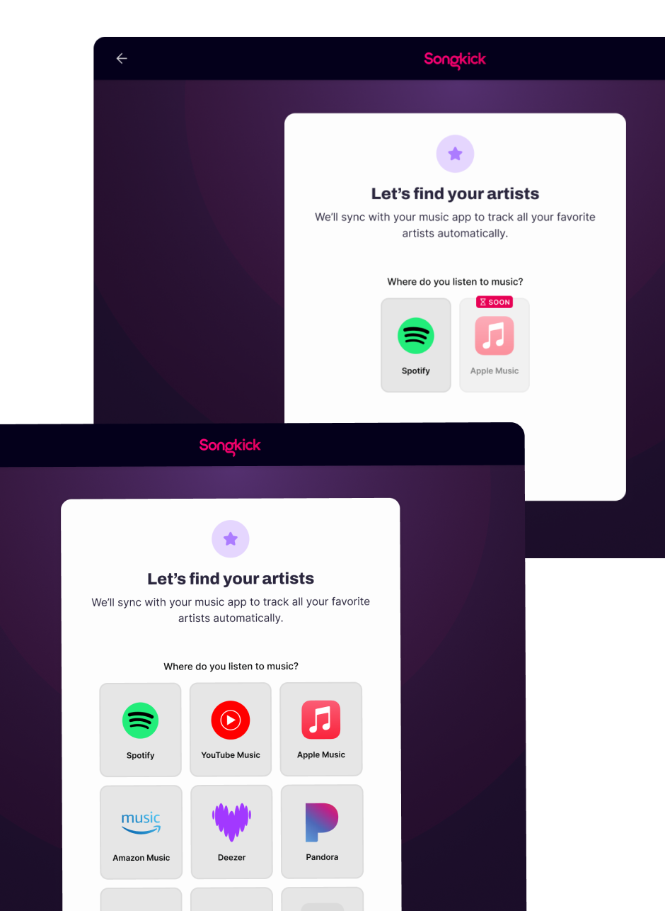
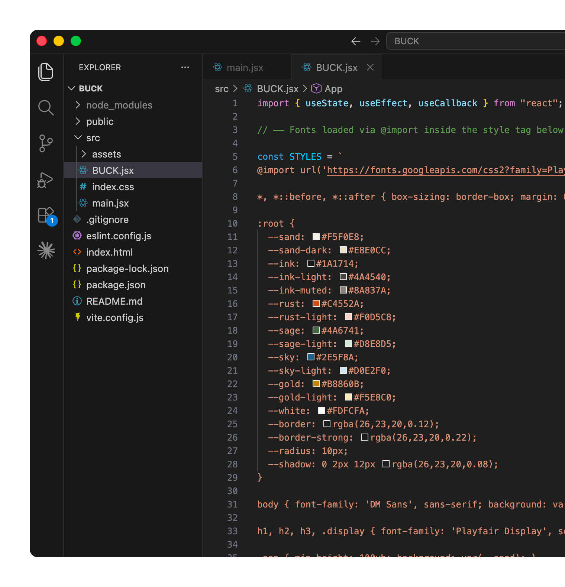

I'm Julia 👋
A generalist designer with 6+ years experience across web and mobile apps, most recently at Warner Music Group.
I've spent most of my career building products that help people connect over the things they love. I’m also a big believer in using data to help steer design decisions and guarantee they result in measurable outcomes for both the user and the business. My other interests include design systems, accessibility, and AI-empowered workflows.

New Onboarding Flow
A major end-to-end redesign of the onboarding experience for a concert discovery app, doubling day 7 retention.
View case study →Attendance Optimization
Achieving a near-100% metric gain without a major feature build.
View →

Roadie 2.0 Design System
Leading a cross-functional, cross-platform design system effort.
View →Growth Experiments
A series of onboarding experiments focused on activation on web.
View →
Vibecoding a bucket list app
With the help of Claude Code, building a React web app from scratch; currently in progress.
